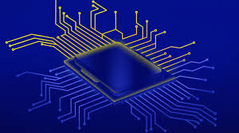

Vantagens
- Garantia de 30 dias
- Visita técnica sem custo
- Suporte 24h



Para serviços de informática, como manutenção de computadores e laptops, formatação de computadores (Windows e Linux) e de programas... Seu lugar é aqui!
Aqui você encontra qualidade: D. Moreira Informática.
Tenho mais de 10 anos de experiência com serviços de manutenção de computadores e de rede. Ofereço serviço de qualidade e agilidade.